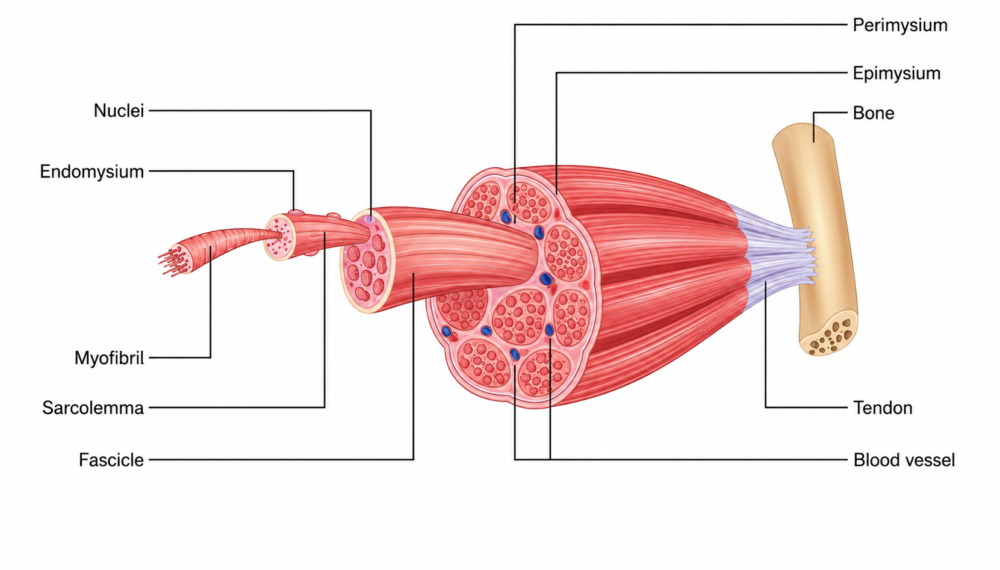
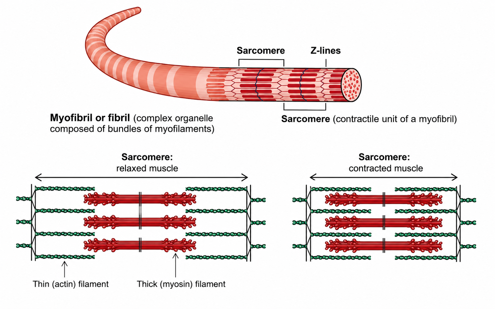

Module 01 · Lesson 02
Foundations of Human Anatomy & Physiology
Muscle is a type of tissue that can create force and change length. There are three types of muscle in the body:
All muscle types share five unique properties:
Skeletal muscle is made up of thousands of muscle fibres that run the length of the muscle. Understanding this hierarchy helps coaches appreciate why training adaptations take time and why tendons and connective tissue respond more slowly than muscle tissue:
| Structural Level | Description |
|---|---|
| Myofilaments | The thinnest level: actin (thin) and myosin (thick) protein filaments. |
| Myofibrils | The contractile units within each muscle fibre, running the length of the fibre. Contain the proteins actin and myosin. |
| Sarcomeres | The smallest functional unit of skeletal muscle; found within myofibrils. Each sarcomere contains thin actin filaments and thick myosin filaments whose interaction produces the contraction. |
| Muscle fibres | Individual muscle cells, each wrapped in connective tissue (fascia). Contain many myofibrils. |
| Fascicles | Bundles of muscle fibres bound together by more fascia. Multiple fascicles group together to form the whole muscle. |
| Tendon | The fascia thickens as it nears the surface of the muscle and ultimately coats the entire muscle before becoming the tendon — the structure that attaches muscle to bone. |

From muscle fibre to whole muscle — the connective tissue hierarchy
Skeletal muscle serves four major functions, all of which are relevant to coaching:
Skeletal muscles are attached to bones at either end by tendons. Understanding origin and insertion explains why muscles produce the movements they do:
Example: The biceps brachii has two origins on the scapula (hence 'bi' = two). Its insertion is on the radius. When it contracts, it pulls the radius upward, flexing the elbow. The rotator cuff muscles act as fixators — stabilising the shoulder joint (the origin's joint) so that the biceps can function effectively.
When the body performs a movement, different muscles take on different roles simultaneously. Understanding these roles allows coaches to prescribe exercises that specifically target the right muscle in the right role:
| Muscle Role | Definition & Climbing Example |
|---|---|
| Agonist (Prime Mover) | The muscle provides the major force to complete the movement. In a pull-up, the latissimus dorsi is the primary agonist. Note: the agonist can contract concentrically (shortening) or eccentrically (lengthening) — it is the prime mover in both cases. |
| Antagonist | The muscle opposing the agonist. While the agonist contracts and causes movement, the antagonist typically relaxes — but it can also contract to decelerate or stop a movement to protect the joint. In a pull-up, the triceps is the antagonist. In climbing, the pushing muscles are chronically under-trained antagonists. |
| Synergist | Muscles that assist the agonist and stabilise the joint around which movement occurs. In elbow flexion, the brachioradialis and brachialis are synergists to the biceps. They ensure the movement is smooth and the joint is protected. |
| Fixator (Stabiliser) | Stabilises the origin of the agonist and the joint it spans, allowing the agonist to function most effectively. In a pull-up, the rotator cuff muscles are fixators of the shoulder joint — without them, the humerus would be pulled out of position as the lats contract. |
Antagonist Muscles — A Critical Coaching Concept
Climbing is a pulling-dominant sport. Climbers typically overdevelop their pulling muscles (lats, biceps, finger flexors) relative to their pushing muscles (chest, triceps, shoulder external rotators, finger extensors). This imbalance is a leading cause of shoulder, elbow, and finger injuries. A well designed climbing programme ALWAYS includes dedicated antagonist training.
Understanding how muscles contract is fundamental to coaching exercise technique safely and effectively. Muscles can produce force in three distinct ways depending on whether they are shortening, lengthening, or remaining the same length under load:
A concentric contraction occurs when a muscle shortens under load or tension to overcome resistance. This is the most commonly recognised contraction type.
An eccentric contraction occurs when a muscle lengthens under load or tension — it is resisting rather than producing movement, typically working against gravity.
An isometric contraction occurs when muscles develop tension but no movement occurs — the muscle length remains constant. This is the dominant contraction type in climbing and is frequently underappreciated.
Climbing is Largely an Isometric Sport
Unlike running or cycling (predominantly concentric/eccentric), climbing demands sustained isometric contractions in the forearms and fingers for much of the ascent. This makes local muscular endurance — the ability to sustain isometric contraction over time — a primary physical quality for climbing performance, distinct from cardiovascular endurance.
There are three types of skeletal muscle fibre, each with different characteristics in terms of contraction speed, force production, fatigue resistance, and the energy systems they rely upon. Understanding fibre types helps coaches prescribe training that targets the right qualities for climbing performance.
| Fibre Type | Characteristics & Climbing Relevance |
|---|---|
| Type I — Slow Twitch | Contract slowly but can repeat contractions over long periods without fatigue. Rich in mitochondria and capillaries (hence 'red fibres'). Use the aerobic (oxidative) energy system primarily. Suited to endurance activities. In climbing: ARC training, long easy routes, recovery between attempts, sustained low-intensity effort. |
| Type IIa — Fast Twitch (Intermediate) | Fast contraction speed; can use both aerobic and anaerobic energy sources. Moderate fatigue resistance. Suited to high intensity activities lasting up to 2 minutes. In climbing: sustained hard bouldering, power endurance training (4x4s), sustained crux sequences on sport routes. |
| Type IIb — Fast Twitch (Power) | Contract extremely rapidly and generate very high force, but fatigue quickly. Rely almost exclusively on anaerobic energy. In climbing: single maximal effort moves, campus board, heavy hangboard, short explosive dynos. |
| Characteristic | Type I | Type IIa | Type IIb |
|---|---|---|---|
| Contraction speed | Slow (90–140 ms) | Fast (50–100 ms) | Very fast (40–90 ms) |
| Force production | Low | High | Very high |
| Fatigue resistance | High | Intermediate | Low |
| Energy system | Aerobic (oxidative) | Both aerobic + anaerobic | Anaerobic only |
| Capillary density | High | Intermediate | Low |
| Mitochondria | High | Medium | Low |
| Glycolytic capacity | Low | High | High |
| Efficiency | High (like a scooter) | Medium | Low (like a V8 engine — power but not fuel efficient) |
| Climbing use | Long routes, ARC, recovery | 4x4s, power endurance | Max moves, campus, single hard efforts |
An individual's muscle fibre distribution is determined by three factors:
Coaching Implication
A climber who is genetically gifted with more fast-twitch fibres may naturally excel at bouldering but struggle with endurance routes. Coaches should focus training on addressing individual weaknesses rather than assuming a fixed 'type'. With appropriate programming, slow-twitch dominant athletes can build significant power endurance, and fast-twitch dominant athletes can develop impressive route endurance.
Understanding the physiology of muscle contraction helps coaches explain what is happening during training, why fatigue occurs, and why certain training methods work. This section covers the sliding filament theory, motor units, force grading, and muscle spindles.
The sliding filament theory explains how muscles produce force at the molecular level. Within each sarcomere, thin actin filaments and thick myosin filaments interact to produce contraction. The process occurs in four stages:
The Three Requirements for Contraction
For a skeletal muscle to contract, three conditions must be met: (1) a neural stimulus from a motor neuron, (2) calcium present in the muscle cells, and (3) ATP available for energy. When any of these fail, contraction stops. In the context of climbing: muscle failure mid-route is primarily ATP depletion, not neural fatigue or calcium shortage.

Sarcomere structure — relaxed versus contracted muscle
A motor unit is the motor neuron and all the muscle fibres it innervates. When the neuron fires, all fibres in that unit contract simultaneously (the 'all-or-none' principle). The body controls the amount of force generated (called "Force Grading") through two mechanisms:
In areas requiring precise control (like the fingers), the body has many small motor units giving fine-grained force control. In areas requiring power (like the glutes), there are fewer but larger motor units. This is why finger technique and precise footwork are skills that take years to develop — they require sophisticated neural coordination of many small motor units.
Muscle spindles are sensory receptors located within muscle fibres. Their job is to detect changes in muscle length and the speed of that change. This has direct implications for stretching and power training:
When a muscle is rapidly lengthened (stretched), the muscle spindles are activated and send an impulse to the spinal cord. The spinal cord immediately sends a return signal causing the stretched muscle to contract — this is the stretch reflex. Importantly, this reflex bypasses the brain entirely (it is a spinal cord reflex) because speed of response is critical. The faster the stretch, the stronger the reflex contraction.
The strength of the stretch reflex is directly proportional to the speed of stretch. This is why a fast eccentric load produces greater muscle tension than a slow one — the spindles fire more rapidly, stimulating a stronger motor response. This principle underlies plyometric training.
The stretch-shortening cycle (SSC) is one of the most important mechanisms for generating explosive force in athletic movement. It occurs when a muscle is rapidly stretched (eccentric phase) immediately before it contracts concentrically. Three factors make this produce more force than a concentric contraction alone:
In climbing: the SSC is most visible in dynamic moves (dynos and deadpoints). The brief downward dip before a dynamic upward move is not wasted movement — it is pre-stretching the relevant muscles to exploit the SSC and generate more upward force. Coaches can use this to teach climbers to generate power more efficiently on dynamic moves.
SSC Coaching Application
When coaching dynamic moves, encourage athletes to perform a brief, controlled dip (countermovement) before the explosive phase. This preloads the muscle spindles and stores elastic energy, producing significantly more power than a static initiation. Athletes who begin dynos from a completely stationary position forgo this free force boost.
The human body contains over 600 muscles. For fitness practice, understanding the primary movers (agonists) across each major joint is essential. The tables below group the most important muscles by region and note their primary function.
Muscles Required For This Course
This course doesn't require you to know all the muscles, their origin, insertion and innervations. The Muscle Finder app will help students find all muscles that may be relevant for specific movements and training for climbing. Make yourself familiar with the Muscle Finder and complete the quiz. The quiz is designed to help enhance your knowledge of relevant muscles.
This is a list of muscles to become familiar with to be a better informed climbing coach.
| Muscle | Origin | Insertion | Action |
|---|---|---|---|
| Pectoralis major | Clavicle, sternum, ribs 1–6 | Humerus (intertubercular groove) | Flexion, adduction, medial rotation of shoulder |
| Deltoid | Clavicle, acromion, scapular spine | Deltoid tuberosity of humerus | Abduction (mid fibres); flexion/extension (ant/post) |
| Rotator Cuff (4 muscles) | Various scapular surfaces | Greater/lesser tubercle of humerus | Stabilise glenohumeral joint; medial/lateral rotation |
| Trapezius | Occipital bone, C7-T12 spinous processes | Clavicle, acromion, scapular spine | Elevation, retraction, rotation of scapula |
| Serratus anterior | Ribs 1–8 (lateral surfaces) | Medial border of scapula | Protracts and rotates scapula; holds it against thorax |
| Muscle | Origin | Insertion | Action |
|---|---|---|---|
| Biceps brachii | Coracoid process & supraglenoid tubercle | Radial tuberosity | Elbow flexion; forearm supination |
| Brachialis | Anterior humerus (distal half) | Ulnar tuberosity | Elbow flexion (primary) |
| Triceps brachii | Infraglenoid tubercle & posterior humerus | Olecranon of ulna | Elbow extension |
| Muscle | Origin | Insertion | Action |
|---|---|---|---|
| Rectus abdominis | Pubic crest & symphysis | Xiphoid process, ribs 5–7 | Trunk flexion; compresses abdomen |
| External oblique | Ribs 5–12 (external surfaces) | Iliac crest, linea alba | Trunk rotation (contralateral), lateral flexion |
| Internal oblique | Thoracolumbar fascia, iliac crest | Ribs 9–12, linea alba | Trunk rotation (ipsilateral), lateral flexion |
| Transversus abdominis | Thoracolumbar fascia, iliac crest, ribs 7–12 | Linea alba, pubic crest | Compresses abdomen; spinal stabilisation |
| Erector spinae (group) | Sacrum, iliac crest, ribs, vertebrae | Ribs, vertebrae, skull | Spinal extension and lateral flexion |
| Multifidus | Sacrum, ilium, vertebral spinous processes | Spinous processes 2–4 levels above | Deep spinal stabilisation; extension |
| Muscle | Origin | Insertion | Action |
|---|---|---|---|
| Gluteus maximus | Ilium, sacrum, coccyx | Gluteal tuberosity of femur; IT band | Hip extension, lateral rotation |
| Gluteus medius | External ilium (between gluteal lines) | Greater trochanter of femur | Hip abduction; pelvic stabilisation |
| Gluteus minimus | External ilium (below medius) | Greater trochanter of femur | Hip abduction, medial rotation |
| Iliopsoas (iliacus + psoas) | Iliac fossa; T12-L5 vertebral bodies | Lesser trochanter of femur | Primary hip flexor |
| Hip adductors (group) | Pubis, ischium | Medial femur | Hip adduction; assist flexion/extension |
| Piriformis | Anterior sacrum | Greater trochanter | Lateral rotation of hip; abduction when hip flexed |
| Muscle | Origin | Insertion | Action |
|---|---|---|---|
| Quadriceps (4 muscles) | AIIS, ilium, linea aspera (femur) | Tibial tuberosity (via patellar tendon) | Knee extension; rectus femoris also flexes hip |
| Hamstrings (3 muscles) | Ischial tuberosity; biceps also from femur | Fibula head; medial/lateral tibia | Knee flexion; hip extension |
| Sartorius | ASIS | Medial tibia (pes anserinus) | Hip flexion, abduction, lateral rotation; knee flexion |
| TFL / IT band | ASIS, iliac crest | Lateral tibia (Gerdy's tubercle) | Hip abduction, medial rotation; knee stabilisation |
| Muscle | Origin | Insertion | Action |
|---|---|---|---|
| Gastrocnemius | Medial/lateral femoral condyles | Calcaneus (via Achilles tendon) | Plantarflexion; knee flexion |
| Soleus | Posterior fibula and tibia | Calcaneus (via Achilles tendon) | Plantarflexion (primary; active in all knee positions) |
| Tibialis anterior | Lateral tibia | 1st cuneiform, 1st metatarsal | Dorsiflexion; foot inversion |
| Peroneals (group) | Fibula | Metatarsals, calcaneus | Plantarflexion; foot eversion |
Each skeletal muscle receives its motor signal via specific spinal nerve roots. Understanding innervation helps correlate muscle weakness with the likely level of a spinal injury or nerve compression:
| Nerve Root | Muscles Innervated |
|---|---|
| C3–C5 | Diaphragm (phrenic nerve); trapezius (accessory nerve) |
| C5–C6 | Deltoid, biceps brachii, brachialis, brachioradialis |
| C6–C7 | Wrist extensors (radial nerve), pectoralis major |
| C7–C8 | Triceps brachii, wrist flexors, finger extensors |
| C8–T1 | Intrinsic hand muscles |
| T1–T12 | Intercostals, erector spinae, abdominal muscles (by level) |
| L1–L3 | Hip flexors (iliopsoas), hip adductors |
| L2–L4 | Quadriceps femoris (femoral nerve) |
| L4–L5 | Tibialis anterior, gluteus medius, hamstrings (in part) |
| L5–S2 | Gastrocnemius, soleus, gluteus maximus, peroneals |
The kinetic chain refers to the interconnected system of bones, joints, and muscles that work together to produce movement. In a Closed Kinetic Chain (CKC) movement, the distal segment (foot or hand) is fixed against resistance — for example, a squat or press-up. In an Open Kinetic Chain (OKC) movement, the distal segment moves freely — for example, a leg extension or bicep curl.
| Term | Definition / Description |
|---|---|
| Closed Kinetic Chain (CKC) | Distal segment fixed. Examples: squat, deadlift, press-up, lunge. Multiple joints move simultaneously; generally more functional and sport-specific; greater joint stability due to co-contraction. |
| Open Kinetic Chain (OKC) | Distal segment free. Examples: leg extension, bicep curl, leg curl. Isolation of single joint/muscle group; useful in rehabilitation; less compressive load through joint. |
Programming Implication
A well-balanced programme should include both CKC and OKC exercises. CKC movements typically form the foundation of strength and conditioning programmes due to their functional transfer, while OKC exercises are valuable for targeted muscle development and rehabilitation of specific weaknesses.